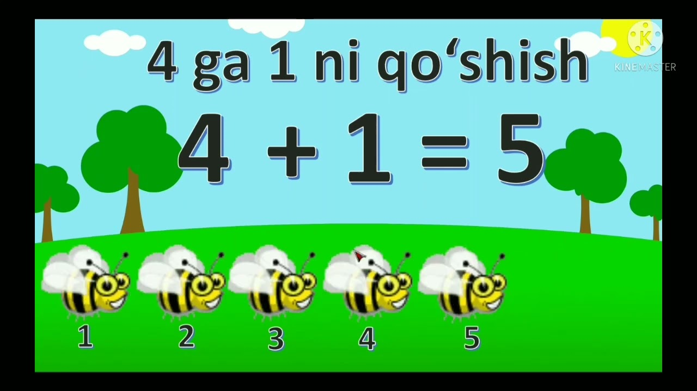
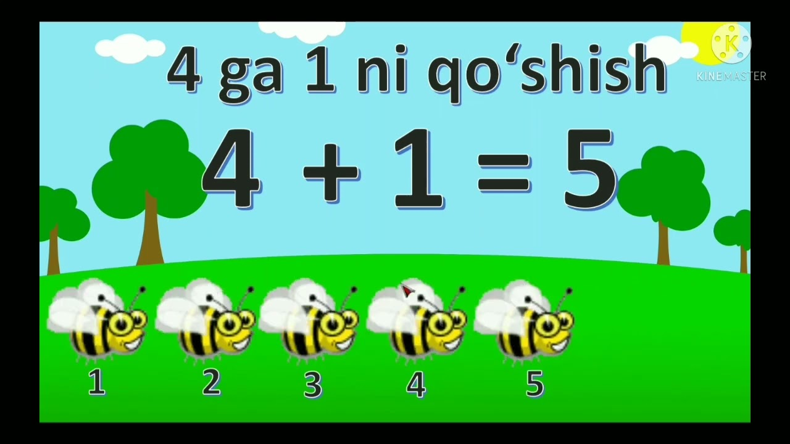
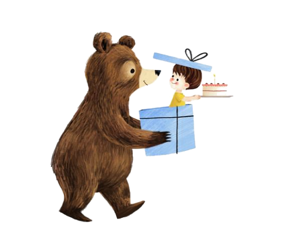
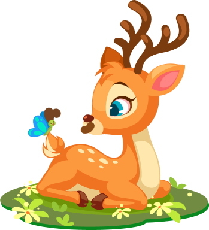

Bola Tv

Ertaklar
Ushbu sahifada o'zbek va jahom xalq ertaklarining eng sara namunalari: Ur to'qmoq
, Zumrat va Qimmat
, Oltin tarvuz
, Tohir va Zuhra
, Egri va to'gri
shu va shu kabi ertaklar bilan tanishishingiz mumkin.
Multfilmlar
Ushbu sahifada o'zbek va jahon multfilmlarining eng sara namunalari: Pomidor doppi
, Masha va ayiq
, Beshta kichkina bola
, Echki bolalari
, Mittivoylar
shu va shu kabi multfilmlar bilan tanishishingiz mumkin.


Bolalar uchun qo'shiqlar
Ushbu sahifada bolalar uchun eng sara o'zbekcha va inglizcha qo'shiqlar: Kapalagim, kapalak
, Jo'jalarim
, Dadajon
, Vatan
, Bath song
, Baby shark
shu va shu kabi qo'shiqlar bilan tanishishingiz mumkin.
Qiziqarli matematika
Ushbu sahifada bolalar uchun mo'ljallangan matematik amallar, qiziqarli boshqotirmalar va mental arifmetikaga doir videolar bilan tanishishingiz mumkin.
Batafsil 



Ingliz tili
Ushbu sahifada bolalar uchun mo'ljallangan ingliz tilidagi qiziqarli darslar bilan tanishishingiz mumkin. Sahifada ingliz tilidagi alifbo, sonlar, fasllar ranglar qanday aytilishi va shu kabi videolar joy olgan.
BatafsilBadantarbiya
Ushbu sahifada bolalar uchun mo'ljallangan har xil badantarbiya mashqlari joy olgan.
Batafsil
Nima uchun aynan biz?
-

Barcha videolar sifatli va tizimli joylangan
-
Xohlagan va xohlagan payt ko'rish imkoniyati
-
Barcha bolalar uchun foydali bo'lgan o'zbek, rus va ingliz tilidagi videolarni bir joyda tomosha qilish imkoniyati
-

Foydali bilimlardan tashqari, bolalar uchun miriqib multfilm va qoshiq tinglash imkoniyati